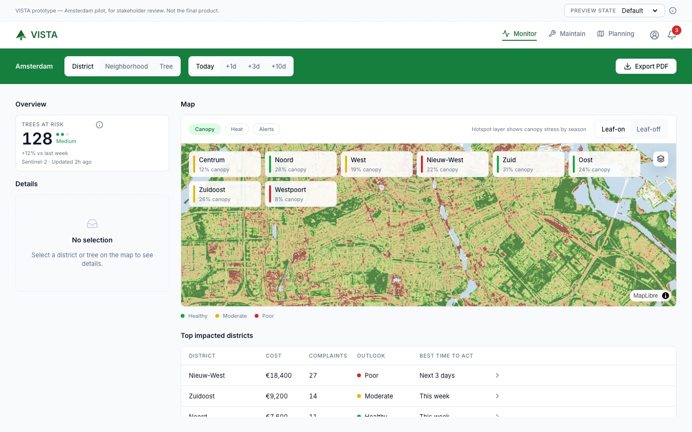
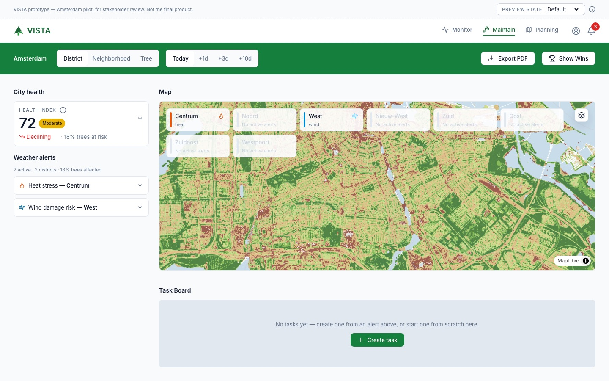
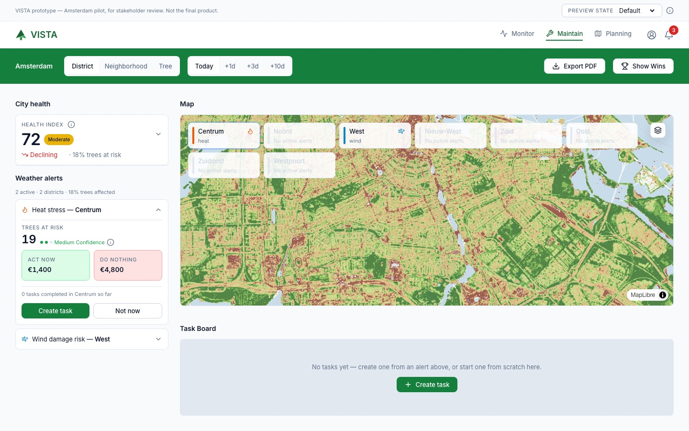
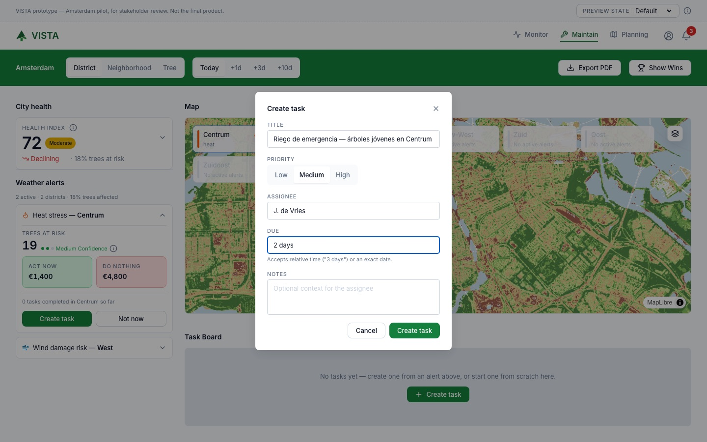
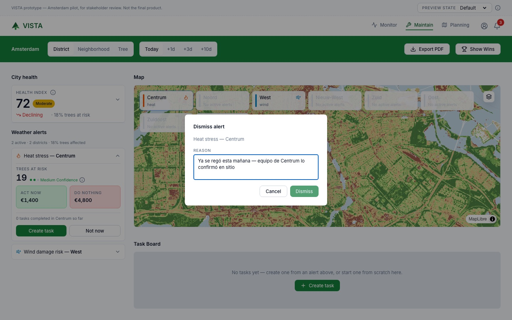
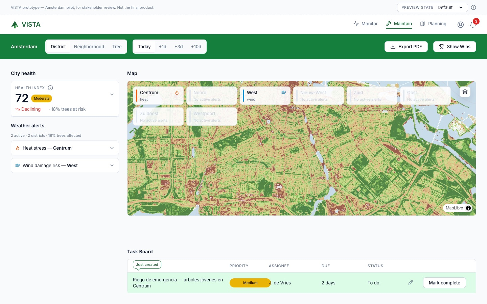
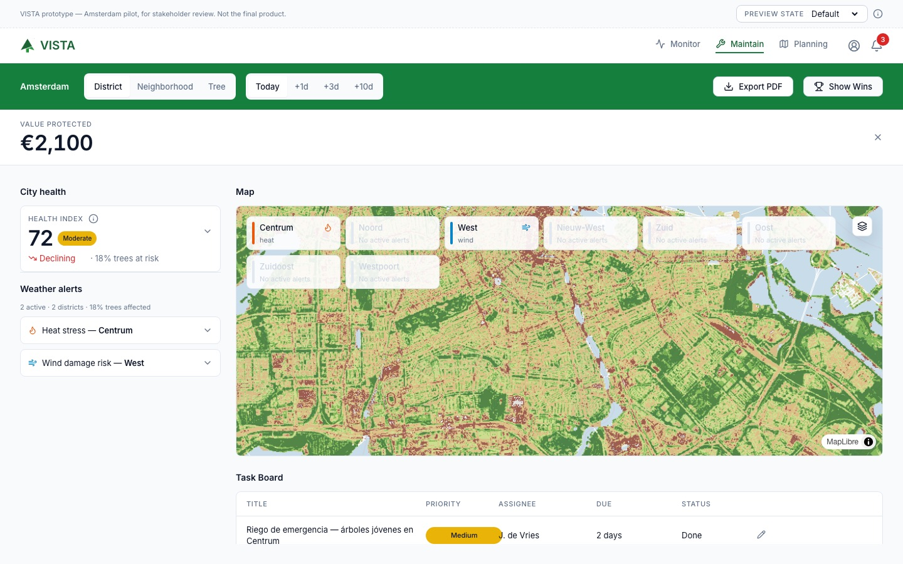
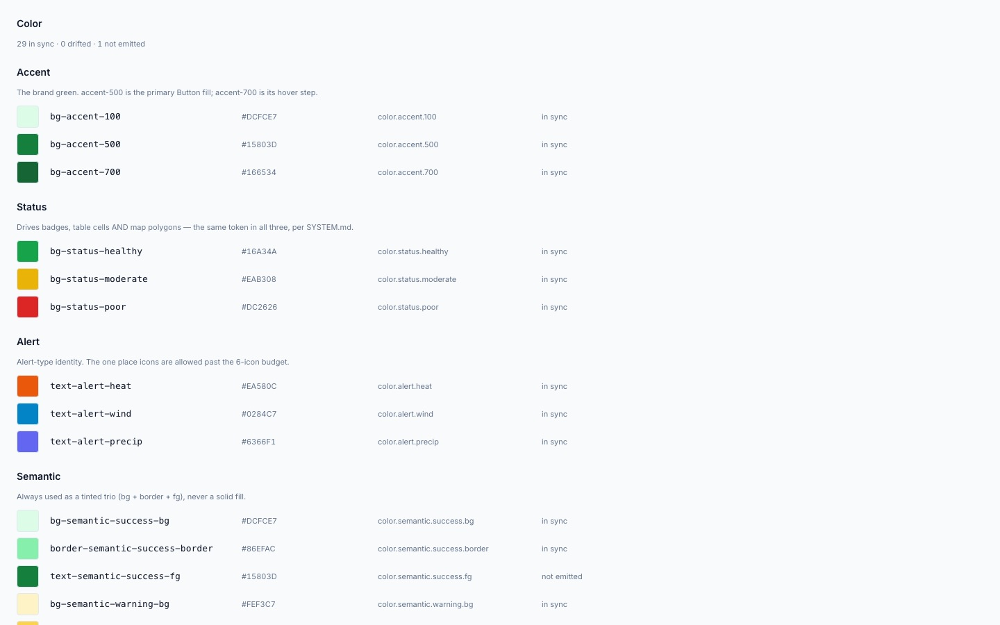

BitaGreen · VISTA · Piloto 1, Ámsterdam
Cómo pasé de bocetos, PDFs y notas de taller a un prototipo navegable con datos satelitales reales, usando Claude como compañero de diseño y de código.
¿Qué resolviste y por qué te importaba resolverlo?
VISTA es una plataforma para cuidar el arbolado urbano. La usan tres perfiles: el gestor de espacios verdes, el arborista y el urbanista. Cuando empecé, el producto existía en PDFs, bocetos de taller y presentaciones, pero no había nada que alguien pudiera usar con las manos.
Encontré cuatro problemas concretos:
El flujo que más me importaba es el del arborista. Hoy, entre que se detecta un árbol en riesgo y que sale un equipo a atenderlo, hay un paso manual de revisión lento y que depende de saber usar herramientas GIS. Eso se traduce en árboles que se pierden y decisiones que nadie puede auditar después.
La meta: que una alerta del clima se convierta en una tarea asignada en menos de 3 minutos, sin salir de la herramienta, y que decidir “no actuar” también quede registrado.
¿Qué alternativas consideraste y por qué elegiste ese camino?
En lugar de pedirle a la IA “hazme una pantalla”, primero escribí un reglamento que Claude debía seguir siempre: un archivo con todos los colores, tamaños y espacios permitidos (tokens.json), las reglas de diseño (SYSTEM.md), una ficha por componente y una lista de revisión que Claude corre antes de entregar. Con eso, cada pantalla nueva sale consistente sin que yo tenga que corregirla a mano.
Estas fueron las decisiones grandes:
| Decisión | Alternativas | Lo que elegí y por qué |
|---|---|---|
| Cómo producir pantallas | Diseñar todo en Figma y luego programar; o pedirle a la IA pantallas sueltas. | Prototipos generados con Claude a partir de reglas escritas. Así el sistema crece con cada pantalla y no se desordena. |
| El mapa | Un mapa “dibujado” de mentira (lo decidí primero, el 12 de agosto); Mapbox como servicio pagado. | Un mapa real con MapLibre e imágenes satelitales Sentinel-2 de Ámsterdam, alojado por nosotros. Cambié de opinión dos días después porque los usuarios reaccionan distinto a datos reales, y alojarlo nosotros evita costos y dependencias. |
| Datos de prueba | Simular un servidor completo (MSW). | Datos simples en archivos: 8 distritos, 23 barrios y ~200 árboles. Más rápido y suficiente para probar ideas. |
| Panel lateral de Maintain | Cuatro opciones: tarjetas apiladas, interruptor salud/alertas, franja sobre el mapa, pestañas. | Construí la opción 1 en código y dejé la 3 y la 4 en Figma para compararlas lado a lado. Mostrar varias opciones evita casarse con la primera idea. |
| Confirmar una tarea creada | Una ventana de confirmación que hay que cerrar. | Un resaltado suave “Recién creada” en la fila nueva que desaparece solo. Un clic menos en el flujo principal. |
| Dónde vive “la verdad” | Figma como fuente única; o sincronizar Figma y código en ambas direcciones. | El código manda en lo construido y Figma manda en lo que aún no existe. Cada dato viaja en una sola dirección, así nadie tiene que reconciliar dos versiones a mano. |
| Galería de componentes | Una página escrita a mano (ya cubría solo 11 de 33 componentes). | Storybook, que se genera desde el código y avisa cuando un color o tamaño se desalinea del sistema. |
Dos reglas sostuvieron todo el proceso: los prototipos son desechables (sirven para probar ideas, no para producción) y los patrones nuevos se señalan, no se cuelan: si Claude inventa algo que no está en el sistema, lo anota, y solo se vuelve oficial cuando dos pantallas lo necesitan.
Muéstranoslo funcionando y nombra las herramientas o modelos exactos.
Un prototipo web con dos de los tres módulos funcionando, publicado en una URL que cualquiera puede abrir. El centro es el recorrido Alerta → Tarea del módulo Maintain: así se ve de principio a fin.

Mapa satelital real con el índice de vegetación de Sentinel-2. Cada distrito muestra su porcentaje de dosel.
Monitor: la salud de la ciudad. Antes del flujo, el gestor de espacios verdes ve el mapa con capas de dosel, calor y alertas, la temporada con y sin hojas, y los distritos más afectados ordenados por costo y urgencia.

Aparece en el panel lateral y sobre el distrito afectado en el mapa: calor en Centrum y viento en West.
Llega la alerta · panel lateral y mapa. El arborista entra a Maintain y ve las alertas del clima activas: cuántas hay, en cuántos distritos y qué porcentaje de árboles afectan.

19 árboles en riesgo, confianza media y lo que cuesta actuar frente a no hacer nada.
Revisa y decide · tarjeta de la alerta. Al abrirla, la alerta se expande en el mismo panel y se resalta su distrito en el mapa: 19 árboles en riesgo, confianza media del pronóstico y la comparación que justifica actuar, 1.400 € si se actúa ahora contra 4.800 € si no se hace nada.

La ventana se abre sobre la misma pantalla. Cada campo muestra su ayuda solo cuando está activo.
Ver la rama “Ahora no” ↓Crea la tarea · ventana modal. Título, prioridad, responsable, plazo y notas, sin salir de Maintain. La ayuda que aparece al enfocar un campo se volvió una regla del sistema de diseño.

Descartar exige escribir por qué. La alerta sale del panel y del mapa, y la decisión queda guardada.
Ahora no · ventana modal. Elegir “Ahora no” abre esta ventana. El botón de descartar no se activa hasta que hay un motivo, porque no actuar también es una decisión que debe quedar registrada.

La tarea aparece resaltada como “Recién creada”, sin ventana de confirmación que cerrar.
Entra al tablero · tablero de tareas. La tarea aterriza en la misma pantalla con su prioridad, responsable y plazo. El resaltado desaparece solo a los pocos segundos.

Al marcarla como hecha, el valor protegido sube a 2.100 € y todo el equipo lo ve.
Completa y suma un logro · barra de logros. La tarea pasa a “Hecha” y su valor se suma al indicador de valor protegido. Así el equipo no solo ve riesgos, también lo que ha salvado.

El sistema se revisa solo. Esta página lee el archivo de colores y lo compara con lo que la app realmente usa: 29 sincronizados, 0 desalineados, 1 sin usar.
Claude Code (app de escritorio) con Claude Sonnet 5 para casi toda la construcción, y Claude Opus 5 para el trabajo de estrategia: el plan de entrega, el diagrama del proceso, la propuesta y el resumen ejecutivo. Los reportes y comparaciones los publiqué como Claude Artifacts. Este resumen lo armé con Claude Opus 5.5.
Figma conectado a Claude mediante el servidor MCP de Figma: variables, componentes y la página del flujo Alerta → Tarea se mantienen al día con el código. Diagramas de flujo en Mermaid.
Vite 6, React 18, TypeScript 5.7, Tailwind CSS v4, react-router-dom 7, zustand 5 e íconos lucide-react. Código en GitHub.
MapLibre GL 6 con un mapa base PMTiles alojado por nosotros, límites de distritos en GeoJSON e índice NDVI de Sentinel-2, descargado con un script de Python desde Copernicus Data Space.
Storybook 10 con revisión de accesibilidad, Vitest y Playwright. Prototipo y Storybook publicados en Vercel.
¿Qué cambió a partir de esto? ¿Qué impacto tuvo?
Vamos a empezar a trabajar juntos en cuanto el cliente consiga el presupuesto para contratarme como fractional designer y AI builder.
El proceso también empezó a detectar sus propios errores. Encontré que las reglas escritas decían que el espacio entre tarjetas era de 16 px mientras el código usaba 12 px desde hacía días. Ese hallazgo justificó Storybook y el plan de controles automáticos.
El trabajo se convirtió en dos entregables para el cliente: un plan de entrega (qué recibe su equipo de desarrollo y cómo se evita que una pantalla nueva rompa una decisión anterior) y una propuesta de colaboración para seguir desarrollando el sistema con su equipo. Esa propuesta es la que el cliente compró.
¿Qué harías diferente o qué te gustaría probar con más tiempo o acceso?
Construir dentro del prototipo el mismo tour de la sección 3: oscurecer la pantalla, resaltar el módulo donde ocurre cada paso y mostrar notas numeradas con Anterior y Siguiente. Así cualquier persona del cliente puede revisarlo sin que yo esté presente para narrarlo. Empieza por el flujo Alerta → Tarea y se activa desde la barra de herramientas del prototipo, junto al selector de estados.
Documentos que acompañaron cada etapa.